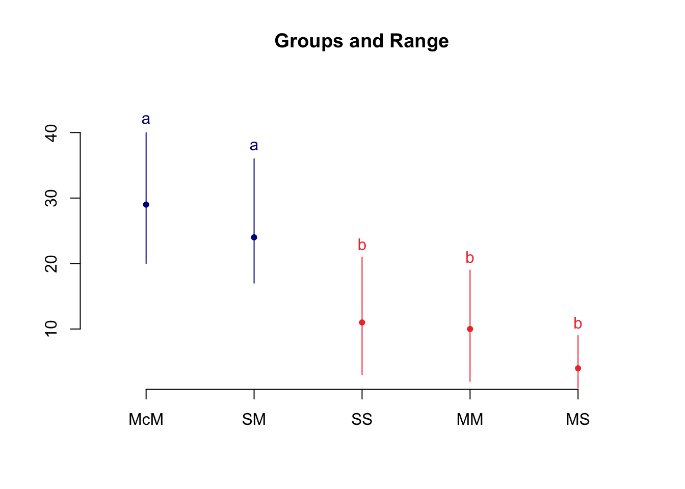
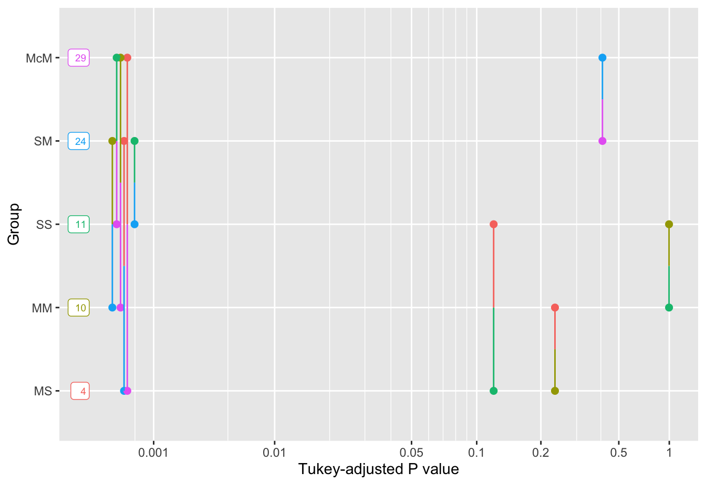

34Multiple comparisons in One-way ANOVA, pt. 1: post hoc tests
34.1 TLDR; Steps for running a posthoc test of means
This walkthrough requires the following to be installed / loaded in R
Be sure that the column that contains your IV is indeed being treated as a factor. If it is levels(IV) will list your levels, also the column containing the IV will contain <fct>.
build an ANOVA model using lm(), aov(), or afex() (output to lm)
run your post-hoc comparisions using the p.adjustment of your choice (tukey, holm, bonferroni)
Example (I recommend running this line-by-line)
# Preliminaries## load in datadataset<-read_table2("https://www.uvm.edu/~statdhtx/methods8/DataFiles/Tab12-1.dat")
Warning: `read_table2()` was deprecated in readr 2.0.0.
ℹ Please use `read_table()` instead.
── Column specification ────────────────────────────────────────────────────────
cols(
ID = col_character(),
Group = col_double(),
Time = col_double()
)
## Group is numerically coded. Fixing this and turning to a factordataset$Group<-recode_factor(dataset$Group, "1"="MS","2"="MM","3"="SS","4"="SM","5"="McM")# Step 2: Run the modelmodel_aov<-lm(Time~Group, data =dataset)# Step 3: Test the model for significant F-valuemodel_aov%>%sjstats::anova_stats()
# Step 4: post-hoc analysis in this example "tukey", but could also be "bonf" or "holm"emmeans(object =model_aov,specs =~Group, adjust="tukey")%>%pairs()
contrast estimate SE df t.ratio p.value
MS - MM -6 2.83 35 -2.121 0.2340
MS - SS -7 2.83 35 -2.475 0.1198
MS - SM -20 2.83 35 -7.071 <.0001
MS - McM -25 2.83 35 -8.839 <.0001
MM - SS -1 2.83 35 -0.354 0.9965
MM - SM -14 2.83 35 -4.950 0.0002
MM - McM -19 2.83 35 -6.718 <.0001
SS - SM -13 2.83 35 -4.596 0.0005
SS - McM -18 2.83 35 -6.364 <.0001
SM - McM -5 2.83 35 -1.768 0.4078
P value adjustment: tukey method for comparing a family of 5 estimates
34.2 Comparing means in the ANOVA model
In AoV, part 1, introduced the One-Way ANOVA. ANOVA is useful when we are comparing 3 or more group means such that the null hypothesis is:
\[\mu_1=\mu_2=\mu_3...=\mu_n\].
In this case, if a single mean is revealed to be significantly different from the others, then the null is rejected. However, rejecting the null only tells us that at least one mean was different from the others; it does not tell us which one or how many. For example with just three means, it could be the case that:
\(\mu_1≠\mu_2=\mu_3\)
\(\mu_1=\mu_2≠\mu_3\)
\(\mu_1=\mu_3≠\mu_2\)
\(\mu_1≠\mu_2≠\mu_3\)
Simply getting a significant F-value does not tell us this at all. In order to suss out any differences in our groups we are going to need to make direct comparisons between them.
Enter multiple contrasts. Multiple contrasts are a way of testing the potential inequalities between group means like those above. As always, both Navarro and Poldrack do wonderful jobs of laying out the mathematics and logic of multiple comparisons. As with Part 1 I focus on practical implementation and spend some time focusing a bit on potential landmines and theoretical concerns as I see them.
This vignette assumes that you have the following packages installed and loaded in R:
# use pacman to check, install, and load necessary packagespacman::p_load(agricolae,cowplot, tidyverse, emmeans,multcomp,psych,sjstats)
34.3 The data: Siegel’s 1975 study on the effects of morphine
To start, lets download Siegel’s (1975) data set on Morphine Tolerance. This data set can be found on the web. Before diving into the data, check a description of the experiment in the Siegel_summary.pdf file in the walkthroughs folder. When you are done, come back a we’ll work on analyzing this data.
# grab data from online location:dataset<-read_table2("https://www.uvm.edu/~statdhtx/methods8/DataFiles/Tab12-1.dat")
── Column specification ────────────────────────────────────────────────────────
cols(
ID = col_character(),
Group = col_double(),
Time = col_double()
)
# convert dataset$Group number codes to named factor levels:dataset$Group<-recode_factor(dataset$Group, "1"="MS","2"="MM","3"="SS","4"="SM","5"="McM")# get descriptive stats for this data by Grouppsych::describeBy(dataset$Time,dataset$Group)
Descriptive statistics by group
group: MS
vars n mean sd median trimmed mad min max range skew kurtosis se
X1 1 8 4 3.16 3.5 4 3.71 1 9 8 0.43 -1.59 1.12
------------------------------------------------------------
group: MM
vars n mean sd median trimmed mad min max range skew kurtosis se
X1 1 8 10 5.13 10.5 10 4.45 2 19 17 0.15 -0.99 1.81
------------------------------------------------------------
group: SS
vars n mean sd median trimmed mad min max range skew kurtosis se
X1 1 8 11 6.72 10.5 11 8.15 3 21 18 0.23 -1.69 2.38
------------------------------------------------------------
group: SM
vars n mean sd median trimmed mad min max range skew kurtosis se
X1 1 8 24 6.37 23 24 5.93 17 36 19 0.59 -1.07 2.25
------------------------------------------------------------
group: McM
vars n mean sd median trimmed mad min max range skew kurtosis se
X1 1 8 29 6.16 28.5 29 5.93 20 40 20 0.28 -1.07 2.18
Now that our data is properly coded we can run our omnibus ANOVA. My own personal preference is to run the ANOVA using lm(). This makes like a lot easier when dealing with contrasts, especially if you decide to employ the method that Field suggests in his guide. FWIW, I typically use another method as seen below, but I’ll talk a little bit about why I prefer it to Fields method. That said, recall from Part 1 that using the aov() function gives you the same result. Depending on which you choose, you can use the summary(morphine_mdl) or anova(morphine_mdl) to switch back and forth to get the info that you desire:
# running the ANOVA using lm:morphine_mdl<-lm(formula =Time~Group,data =dataset)# using the anova() function to display as ANOVA tableanova(morphine_mdl)
Analysis of Variance Table
Response: Time
Df Sum Sq Mean Sq F value Pr(>F)
Group 4 3497.6 874.4 27.325 2.443e-10 ***
Residuals 35 1120.0 32.0
---
Signif. codes: 0 '***' 0.001 '**' 0.01 '*' 0.05 '.' 0.1 ' ' 1
# full anova output (preferred)sjstats::anova_stats(morphine_mdl)
So we see here that we have: \(F(4,35)=27.33,p<.001,\eta_p^2=.75\)
Remember again that the only thing that the omnibus ANOVA tells us is that there is an inequality in our means. In this respect, the omnibus begs more questions than it answers—which means are different from which. In order to get this answer we need to run direct comparisons between our means. There are two ways of going about this, we can either (1) plan beforehand what differences in means are especially relevant for us and focus on those, or (2) take a look at all potential differences without any specified predictions. In Case 1, we are performing planned contrasts; in Case 2, we use post hoc tests. More often than not, you will see researchers analyzing differences in means using post hoc tests—that is they run the ANOVA, find that it is significant, and run a battery of pairwise comparisons. It is sometimes the case that of that battery of comparisons, only a select few are actually theoretically relevant. However, if there is a theory-driven case to be made that you are predicting differences between a few select means in your data, then there is an argument to be made that you should run your planned contrasts independent of your ANOVA. That is, you are technically only permitted to run post-hoc tests if your ANOVA is significant (you can only go looking for differences in means if your ANOVA tells you that they exist), whereas planned contrasts can be run regardless of the outcome of the omnibus ANOVA (indeed, some argue that they obviate the need to run the omnibus ANOVA altogether).
My guess is that most of you have experience with post-hoc tests. They are more commonly performed tend to be touched upon in introductory stats courses. So we will spend a little time on these first before proceeding to a more in depth treatment of planned contrasts.
34.5 Post-hoc tests
We use a post-hoc test when we want to test for differences in means that we have not explicitly predicted prior to conducting our experiment. As a result, whenever we perform a post-hoc test, we need to adjust our critical p-values to correct for inflation of Type 1 error. Recall from earlier discussions that the odds of committing a Type 1 error (falsely rejecting the null) is \(1-(1-\alpha)^c\) where \(\alpha\) is you critical p-value and \(c\) is the number of comparisons that are to be performed. Typically we keep this at .05, so when conducting a single test, the likelihood of committing a Type 1 error is: \(1-(1-.05)^1=1-0.95^1=0.05\)
However as we increase the number of comparisons, assuming an \(\alpha\) of 0.05:
2 comparisons = \(1-.95^2=0.0975\)
3 comparisons = \(1-.95^3=0.1426\)
4 comparisons = \(1-.95^4=0.1855\)
5 comparisons = \(1-.95^5=0.2262\)
Obviously, we need to control for this. The post-hoc methods that were introduced this week are all similar in that they involve comparing two means (a la t-test) but differ in how the error is controlled. For example a Bonferroni-Dunn correction (which is often used as a post-hoc correction, although initially intended for correcting planned comparisons) adjusts for this by partitioning the significance (by diving your original alpha by the number of comparisons). A popular variant of this method, the Holm test, is a multistage test. It proceeds by ordering the obtained t-values from smallest to largest. We then evaluate the largest t according to the Bonferroni-Dunn correction \(\alpha/c\). Each subsequent comparison t value, \(n\) is evaluated against the correction \(\alpha/(c-n)\). Please note I mention the these two methods with post-hoc analyses, although in true they are intended for planned comparisons. However, in instances in which the number of comparisons is relatively small, I’ve often seen them employed as post-hocs.
So how many comparisons is relatively small? I’d suggest best form is to use the above methods when you have 5 or fewer comparisons, meaning that your critical \(\alpha\) is .01. That said, with a post hoc test, you really do not have a choice in the number of comparisons you can make, you need to test for all possible comparisons on the IV. Why? well if not you are simply cherry picking your data. For example it would be poor form to take a look at our data like so:
Warning: The `fun.y` argument of `stat_summary()` is deprecated as of ggplot2 3.3.0.
ℹ Please use the `fun` argument instead.
and then decide that you only want to compare ‘McM’ to ‘MS’ because that’s where you see the greatest differences. Or that you simply want to take a look at “MM” and “SS” without considering the rest.
Since you did not plan for or explicitly predict these differences from the outset, you are simply banking on what I like to say might be a “historical accident”, that you simply stumbled into these results. As such, it’s deemed as proper for to test all contingencies.
In the case above there are \((5!)/(2!)(5-2)!\) = 10 combinations. If we were to run a Bonferroni correction in this case or critical \(p\) would need to be \(.05/10=.005\) which is an extremely conservative value, and thus dramatically inflates the likelihood of Type II error. In cases like this, Tukey’s HSD is the traditionally preferred method, as it takes into account the characteristics of your data (in particular the standard error of the distribution) when calculating the critical \(p\) value. As such in cases where many post-hoc, pairwise comparisons are made, Tukey’s HSD is less conservative than a Bonferroni adjustment.
One final method that is becoming more en vogue is the Ryan, Einot, Gabriel, Welsch method (REGWQ). Whereas Tukey’s method holds the critical \(p\) constant for all comparisons (at the loss of power) the REGWQ allows for an adjustment for the number of comparisons. It is currently being promoted as the most desirable post-hoc method.
34.5.1 Bonferonni-Dunn and Holm tests
In R there are several ways in which we can call post hoc corrections. For example we can call the Bonferonni and Holm adjustments using pairwise.t.test() function from the base package (already installed). The pairwise.t.test() method asks you to input:
x = your DV
g = your grouping factor
p.adjust.method = the name of your desired correction in string format
First let’s run the pairwise.t.tests with no adjustment (akin to uncorrected \(p\) values):
pairwise.t.test(x =dataset$Time, g =dataset$Group,p.adjust.method ="none")
Pairwise comparisons using t tests with pooled SD
data: dataset$Time and dataset$Group
MS MM SS SM
MM 0.041 - - -
SS 0.018 0.726 - -
SM 3.1e-08 1.9e-05 5.4e-05 -
McM 1.9e-10 8.9e-08 2.6e-07 0.086
P value adjustment method: none
You see above that we get a cross-matrix containing the \(p\) values for each cross pair (row × column). Remember this is something we would never do in a post hoc (no corrections) but I wanted to first run this to illustrate a point. Now let’s run the the Bonferroni and Holm corrections:
34.5.2 Bonferroni example (pairwise.t.test())
pairwise.t.test(x =dataset$Time, g =dataset$Group,p.adjust.method ="bonferroni")
Pairwise comparisons using t tests with pooled SD
data: dataset$Time and dataset$Group
MS MM SS SM
MM 0.41051 - - -
SS 0.18319 1.00000 - -
SM 3.1e-07 0.00019 0.00054 -
McM 1.9e-09 8.9e-07 2.6e-06 0.85818
P value adjustment method: bonferroni
You’ll note that the p-values displayed here are 10x the p-values from the uncorrected matrix. To demonstrate this:
uncorrected<-pairwise.t.test(x =dataset$Time, g =dataset$Group,p.adjust.method ="none")bonf_corrected<-pairwise.t.test(x =dataset$Time, g =dataset$Group,p.adjust.method ="bonferroni")bonf_corrected$p.value/uncorrected$p.value
MS MM SS SM
MM 10 NA NA NA
SS 10 1.377801 NA NA
SM 10 10.000000 10 NA
McM 10 10.000000 10 10
note that the 1.378 value is the result of p being capped at \(p=1\) in the Bonferroni corrected comparison.
Remember from a few paragraphs back that there are 10 possible combinations so the Bonferonni test would need to divide the critical alpha by 10. What this means is that anytime you perform a correction, R actually adjusts the \(p\) values for you; therefore you may interpret the output against your original (familywise) \(\alpha\). So here, any values that are still less than .05 after the corrections are significant.
Moving on…
34.5.3 Holm example (pairwise.t.test())
pairwise.t.test(x =dataset$Time, g =dataset$Group,p.adjust.method ="holm")
Pairwise comparisons using t tests with pooled SD
data: dataset$Time and dataset$Group
MS MM SS SM
MM 0.12315 - - -
SS 0.07327 0.72579 - -
SM 2.8e-07 0.00011 0.00027 -
McM 1.9e-09 7.1e-07 1.8e-06 0.17164
P value adjustment method: holm
34.6 Tukey HSD and REGWQ tests
In order to run Tukey’s HSD and REGWQ methods we call upon the agricolae package. In this case, we need to input our lm() model into the function, as well as identify our “treatment” (in this case our “Group” factor). For example:
34.6.1 Tukey HSD example (agricolae)
morphine_mdl<-lm(Time~Group,data =dataset)# from aboveagricolae::HSD.test(morphine_mdl,trt ="Group",group =T,console =T)
Study: morphine_mdl ~ "Group"
HSD Test for Time
Mean Square Error: 32
Group, means
Time std r Min Max
McM 29 6.164414 8 20 40
MM 10 5.126960 8 2 19
MS 4 3.162278 8 1 9
SM 24 6.369571 8 17 36
SS 11 6.718843 8 3 21
Alpha: 0.05 ; DF Error: 35
Critical Value of Studentized Range: 4.065949
Minimun Significant Difference: 8.131899
Treatments with the same letter are not significantly different.
Time groups
McM 29 a
SM 24 a
SS 11 b
MM 10 b
MS 4 b
Note that the group and console arguments pertain to the output. You typically will want to keep console set to TRUE as that simply prints the output of your test. The group argument controls how the output is presented. Above we set it to TRUE. This results in an output that groups the treatment means into subsets where treatments with the same letter are not significantly different from one another, known as compact letter displays. For example, as are not significantly different from each other, bs are not significantly different from each other, butas are different from bs. Conversely if you wanted to see each comparison you can set this to FALSE:
Study: morphine_mdl ~ "Group"
HSD Test for Time
Mean Square Error: 32
Group, means
Time std r Min Max
McM 29 6.164414 8 20 40
MM 10 5.126960 8 2 19
MS 4 3.162278 8 1 9
SM 24 6.369571 8 17 36
SS 11 6.718843 8 3 21
Alpha: 0.05 ; DF Error: 35
Critical Value of Studentized Range: 4.065949
Comparison between treatments means
difference pvalue signif. LCL UCL
McM - MM 19 0.0000 *** 10.868101 27.131899
McM - MS 25 0.0000 *** 16.868101 33.131899
McM - SM 5 0.4078 -3.131899 13.131899
McM - SS 18 0.0000 *** 9.868101 26.131899
MM - MS 6 0.2340 -2.131899 14.131899
MM - SM -14 0.0002 *** -22.131899 -5.868101
MM - SS -1 0.9965 -9.131899 7.131899
MS - SM -20 0.0000 *** -28.131899 -11.868101
MS - SS -7 0.1198 -15.131899 1.131899
SM - SS 13 0.0005 *** 4.868101 21.131899
Finally, if you do decide to group (group=TRUE), you can take the outcome of this function and use it to generate a nice group plot. This is useful for quick visual inspection.
Study: morphine_mdl ~ "Group"
HSD Test for Time
Mean Square Error: 32
Group, means
Time std r Min Max
McM 29 6.164414 8 20 40
MM 10 5.126960 8 2 19
MS 4 3.162278 8 1 9
SM 24 6.369571 8 17 36
SS 11 6.718843 8 3 21
Alpha: 0.05 ; DF Error: 35
Critical Value of Studentized Range: 4.065949
Minimun Significant Difference: 8.131899
Treatments with the same letter are not significantly different.
Time groups
McM 29 a
SM 24 a
SS 11 b
MM 10 b
MS 4 b

34.6.2 REGWQ example (agricolae)
The same applies to REGW, using the REGW.test() function (with group=F, I’m showing all of the comparisons):
Study: morphine_mdl ~ "Group"
Ryan, Einot and Gabriel and Welsch multiple range test
for Time
Mean Square Error: 32
Group, means
Time std r Min Max
McM 29 6.164414 8 20 40
MM 10 5.126960 8 2 19
MS 4 3.162278 8 1 9
SM 24 6.369571 8 17 36
SS 11 6.718843 8 3 21
Comparison between treatments means
difference pvalue signif. LCL UCL
McM - MM 19 0.0000 *** 12.1234674 25.876533
McM - MS 25 0.0000 *** 17.4611210 32.538879
McM - SM 5 0.3056 -2.6279930 12.627993
McM - SS 18 0.0000 *** 9.8681013 26.131899
MM - MS 6 0.0995 . -0.8765326 12.876533
MM - SM -14 0.0001 *** -21.5388790 -6.461121
MM - SS -1 0.9846 -8.6279930 6.627993
MS - SM -20 0.0000 *** -26.8765326 -13.123467
MS - SS -7 0.0771 . -14.5388790 0.538879
SM - SS 13 0.0001 *** 6.1234674 19.876533
Compact letter displays are nice (SPSS generates them, too), but as seems to always be the case, there is some controversy as to whether we should use them. Taken from this vignette:
CLD displays promote visually the idea that two means that are “not significantly different” are to be judged as being equal; and that is a very wrong interpretation. In addition, they draw an artificial “bright line” between P values on either side of alpha, even ones that are very close.
35 Using estimated marginal means, emmeans()
In previous years I would have stopped here and left you with the impression that you may need to call different packages depending on what post-hoc (or later, contrast) you intend to run. While this is perfectly acceptable, more and more I am using the estimated marginal means (package) to perform just about all of my post hoc analyses and contrasts. From the emmeans vignette (link):
Estimated marginal means are based on a model – not directly on data. The basis for them is what we call the reference grid for a given model. To obtain the reference grid, consider all the predictors in the model.
(The notion of a reference grid will become more apparent when we more into factorial ANOVA For now, let’s just focus on practical implementation).
I typically use this framework as it allows for a higher level of flexibility in analyzing contrasts while still being unified. We’ll see just how far we can go in the upcoming weeks. For now, let’s use the emmeans package to perform our post-hoc analyses from above.
We start by throwing our model into the emmeans() function, specifying our test as a function of our comparison. We also need to tell R what adjustment (correction) we desire. To remind ourselves, our model is:
For a pairwise test with a bonferroni correction we need to specify what factor (or predictor or IV) we are running our pairwise comparisons on (spec =), and that we are adjusting by using the bonferonni (bonf). This takes the general form:
contrast estimate SE df t.ratio p.value
MS - MM -6 2.83 35 -2.121 0.4105
MS - SS -7 2.83 35 -2.475 0.1832
MS - SM -20 2.83 35 -7.071 <.0001
MS - McM -25 2.83 35 -8.839 <.0001
MM - SS -1 2.83 35 -0.354 1.0000
MM - SM -14 2.83 35 -4.950 0.0002
MM - McM -19 2.83 35 -6.718 <.0001
SS - SM -13 2.83 35 -4.596 0.0005
SS - McM -18 2.83 35 -6.364 <.0001
SM - McM -5 2.83 35 -1.768 0.8582
P value adjustment: bonferroni method for 10 tests
emmeans also allows us to run a pairwise Tukey test:
contrast estimate SE df t.ratio p.value
MS - MM -6 2.83 35 -2.121 0.2340
MS - SS -7 2.83 35 -2.475 0.1198
MS - SM -20 2.83 35 -7.071 <.0001
MS - McM -25 2.83 35 -8.839 <.0001
MM - SS -1 2.83 35 -0.354 0.9965
MM - SM -14 2.83 35 -4.950 0.0002
MM - McM -19 2.83 35 -6.718 <.0001
SS - SM -13 2.83 35 -4.596 0.0005
SS - McM -18 2.83 35 -6.364 <.0001
SM - McM -5 2.83 35 -1.768 0.4078
P value adjustment: tukey method for comparing a family of 5 estimates
35.1 Alternative to CLD()
One thing to note, the curator of the emmeans() package is not a fan of cld (Compact Letter Displays) and instead has created pwpp as a visualization tool.
emmeans(morphine_mdl, specs =~Group)%>%pwpp()

You can visit this vignette to get a feel for what is at issue here.
35.2 Effect sizes
Typically when reporting the effect size of the difference between two means we use Cohen’s \(d\). However, calculating Cohen’s $d$ in a posthoc contrast is slightly more involved than the method used for a regular t-test. This is because with a regular t-test you only have 2 means from 2 samples that you have collected. In the case of pairwise contrasts in ANOVA, while you are only comparing two means, those means are nested within a larger group (e.g., when comparing MS and MM, we still need to account for the fact that we also collected samples from SS, SM, and McM). That is, you need to understand the difference between the two means in the context of the entire model.
Simply put, in our calculations we need to account for the influence of all of our collected groups. This is done by placing the contrasted difference in the context of the Root Mean Square Error, or the square root of the Mean Square Error of the residuals in our ANOVA model. Recall that typically Cohen’s \(d\) is the difference between the two means divided by their pooled standard deviation. Here, \(d\) is the difference between the two means divided by sigma, or the estimated standard deviation of the errors of the linear model.
To do this we’re going to need two things from the original model. Let’s take a look at the model summary:
Call:
lm(formula = Time ~ Group, data = dataset)
Residuals:
Min 1Q Median 3Q Max
-9.00 -3.25 0.00 3.00 12.00
Coefficients:
Estimate Std. Error t value Pr(>|t|)
(Intercept) 4.000 2.000 2.000 0.0533 .
GroupMM 6.000 2.828 2.121 0.0411 *
GroupSS 7.000 2.828 2.475 0.0183 *
GroupSM 20.000 2.828 7.071 3.09e-08 ***
GroupMcM 25.000 2.828 8.839 1.93e-10 ***
---
Signif. codes: 0 '***' 0.001 '**' 0.01 '*' 0.05 '.' 0.1 ' ' 1
Residual standard error: 5.657 on 35 degrees of freedom
Multiple R-squared: 0.7574, Adjusted R-squared: 0.7297
F-statistic: 27.32 on 4 and 35 DF, p-value: 2.443e-10
The values line that is important to us is the Residual standard error ___ on __ degrees of freedom—in this case the values 5.657 and 35 respectively.
Assuming you have run your comparisons using emmeans() you can calculate your effect sizes for each comparison using emmeans::eff_size().
eff_size() takes three arguments:
the emmeans object
the estimated standard deviation of the errors of the linear model, sigma
the residual degrees of freedom from the model, df.residual
The functions sigma() and df.residual() allow us to get this information directly from the model. A typical call would look something like this
# save your contrasts to an objectmdl_contrasts<-emmeans(morphine_mdl, specs =~Group)# use the saved object in the following functioneff_size(mdl_contrasts,sigma =sigma(morphine_mdl), df.residual(morphine_mdl))
contrast effect.size SE df lower.CL upper.CL
MS - MM -1.061 0.516 35 -2.11 -0.0135
MS - SS -1.237 0.521 35 -2.30 -0.1789
MS - SM -3.536 0.655 35 -4.86 -2.2065
MS - McM -4.419 0.727 35 -5.90 -2.9428
MM - SS -0.177 0.500 35 -1.19 0.8392
MM - SM -2.475 0.581 35 -3.65 -1.2955
MM - McM -3.359 0.641 35 -4.66 -2.0570
SS - SM -2.298 0.570 35 -3.46 -1.1400
SS - McM -3.182 0.628 35 -4.46 -1.9067
SM - McM -0.884 0.511 35 -1.92 0.1536
sigma used for effect sizes: 5.657
Confidence level used: 0.95
That said, there is some debate as to whether this is the most appropriate way to calculate posthoc effect sizes, or whether posthoc effect sizes are in general a proper thing to calculate. I’ve personally never had a reviewer ask for one, BUT if I had to provide on I would use this method.
FWIW, this won’t be the last time that we need to call back to the original (omnibus) ANOVA when conducting posthoc tests. Things get a little messier next week!
35.3 Reporting and ANOVA with post hoc analyses.
In your report, you need to include information for the main ANOVA as well as information related to
the omnibus ANOVA
a statement on what multiple comparisons were run and how corrected
note which comparisons were significant.
If we work off of our last example, you’ll note that there are quite a few comparisons that we could discuss (10 in fact). In cases like these you could either put this information into a formatted table, or simply highlight a few that are especially relevant. For example, looking at the emmeans() outcome as well as the CLD plot from agricolae::HSD.test we see that McM and SM (a’s) in the CLD plot are both significantly greater than the remain conditions (b’s). Based on this I would write something like:
… Our ANOVA revealed a significant effect for Morphine treatment group, F(4, 35) = 27.325, p < .001. Tukey pairwise comparisons revealed that the mean tolerance times for the both the SM (\(M±SD\): 24.00 ± 6.37) and McM (29.00 ± 6.16) groups were greater than the remaining three groups (\(ps\) < .05), but not different from one another. The mean times for the remaining three conditions were not significantly different from one another, \(ps > .05\) (see Figure 1)
assuming Figure 1 is a camera ready plot you’ve created in ggplot(). Any of the barplots in this walkthrough will suffice.
Source Code
---title: "Multiple comparisons in One-way ANOVA, pt. 1: post hoc tests"---## TLDR; Steps for running a posthoc test of meansThis walkthrough requires the following to be installed / loaded in `R````{r message=FALSE, warning=FALSE, include=FALSE}# use pacman to check, install, and load necessary packagespacman::p_load(agricolae, cowplot, tidyverse, emmeans, multcomp, psych, sjstats, pwr)```1. Be sure that the column that contains your IV is indeed being treated as a factor. If it is `levels(IV)` will list your levels, also the column containing the IV will contain `<fct>`.2. build an ANOVA model using `lm()`, `aov()`, or `afex()` (output to lm)3. run your post-hoc comparisions using the p.adjustment of your choice (tukey, holm, bonferroni)Example (I recommend running this line-by-line)```{r}# Preliminaries## load in datadataset <-read_table2("https://www.uvm.edu/~statdhtx/methods8/DataFiles/Tab12-1.dat")# Step 1## check data, identify columnsdataset## Group is numerically coded. Fixing this and turning to a factordataset$Group <-recode_factor(dataset$Group, "1"="MS","2"="MM","3"="SS","4"="SM","5"="McM")# Step 2: Run the modelmodel_aov <-lm(Time~Group, data = dataset)# Step 3: Test the model for significant F-valuemodel_aov %>% sjstats::anova_stats()# Step 4: post-hoc analysis in this example "tukey", but could also be "bonf" or "holm"emmeans(object = model_aov,specs =~Group, adjust="tukey") %>%pairs()```## Comparing means in the ANOVA modelIn AoV, part 1, introduced the One-Way ANOVA. ANOVA is useful when we are comparing 3 or more group means such that the null hypothesis is:$$\mu_1=\mu_2=\mu_3...=\mu_n$$.In this case, if a single mean is revealed to be significantly different from the others, then the null is rejected. However, rejecting the null only tells us that at least one mean was different from the others; it does not tell us which one or how many. For example with just three means, it could be the case that:- $\mu_1≠\mu_2=\mu_3$- $\mu_1=\mu_2≠\mu_3$- $\mu_1=\mu_3≠\mu_2$- $\mu_1≠\mu_2≠\mu_3$Simply getting a significant *F*-value does not tell us this at all. In order to suss out any differences in our groups we are going to need to make direct comparisons between them.Enter multiple contrasts. Multiple contrasts are a way of testing the potential inequalities between group means like those above. As always, both Navarro and Poldrack do wonderful jobs of laying out the mathematics and logic of multiple comparisons. As with Part 1 I focus on practical implementation and spend some time focusing a bit on potential landmines and theoretical concerns as I see them.This vignette assumes that you have the following packages installed and loaded in R:```{r warning = FALSE, message=FALSE}# use pacman to check, install, and load necessary packagespacman::p_load(agricolae, cowplot, tidyverse, emmeans, multcomp, psych, sjstats)```## The data: Siegel's 1975 study on the effects of morphineTo start, lets download Siegel's (1975) data set on Morphine Tolerance. This data set can be found on the web. Before diving into the data, check a description of the experiment in the **Siegel_summary.pdf** file in the walkthroughs folder. When you are done, come back a we'll work on analyzing this data.```{r downloading the dataset}# grab data from online location:dataset <-read_table2("https://www.uvm.edu/~statdhtx/methods8/DataFiles/Tab12-1.dat")# convert dataset$Group number codes to named factor levels:dataset$Group <-recode_factor(dataset$Group, "1"="MS","2"="MM","3"="SS","4"="SM","5"="McM")# get descriptive stats for this data by Grouppsych::describeBy(dataset$Time,dataset$Group)```And a quick peek at this data:```{r}ggplot(data = dataset,aes(x=Group,y=Time)) +stat_summary(fun = mean, geom ="bar") +stat_summary(fun.data = mean_se, geom ="errorbar", aes(width=.25)) +scale_y_continuous(expand =c(0,0)) +expand_limits(y=c(0,35)) +theme_cowplot()```## Running the One-way ANOVANow that our data is properly coded we can run our omnibus ANOVA. My own personal preference is to run the ANOVA using `lm()`. This makes like a lot easier when dealing with contrasts, especially if you decide to employ the method that Field suggests in his guide. FWIW, I typically use another method as seen below, but I'll talk a little bit about why I prefer it to Fields method. That said, recall from Part 1 that using the `aov()` function gives you the same result. Depending on which you choose, you can use the `summary(morphine_mdl)` or `anova(morphine_mdl)` to switch back and forth to get the info that you desire:```{r}# running the ANOVA using lm:morphine_mdl <-lm(formula = Time~Group,data = dataset)# using the anova() function to display as ANOVA tableanova(morphine_mdl)# full anova output (preferred)sjstats::anova_stats(morphine_mdl)```So we see here that we have: $F(4,35)=27.33,p<.001,\eta_p^2=.75$Remember again that the **only** thing that the omnibus ANOVA tells us is that there is an inequality in our means. In this respect, the omnibus begs more questions than it answers---which means are different from which. In order to get this answer we need to run direct comparisons between our means. There are two ways of going about this, we can either *(1)* plan beforehand what differences in means are especially relevant for us and focus on those, or *(2)* take a look at all potential differences without any specified predictions. In Case 1, we are performing **planned contrasts**; in Case 2, we use **post hoc** tests. More often than not, you will see researchers analyzing differences in means using post hoc tests---that is they run the ANOVA, find that it is significant, and run a battery of pairwise comparisons. It is sometimes the case that of that battery of comparisons, only a select few are actually theoretically relevant. However, if there is a theory-driven case to be made that you are predicting differences between a few select means in your data, then there is an argument to be made that you should run your planned contrasts independent of your ANOVA. That is, you are technically only permitted to run post-hoc tests if your ANOVA is significant (you can only go looking for differences in means if your ANOVA tells you that they exist), whereas planned contrasts can be run regardless of the outcome of the omnibus ANOVA (indeed, some argue that they obviate the need to run the omnibus ANOVA altogether).My guess is that most of you have experience with post-hoc tests. They are more commonly performed tend to be touched upon in introductory stats courses. So we will spend a little time on these first before proceeding to a more in depth treatment of planned contrasts.## Post-hoc tests**We use a post-hoc test when we want to test for differences in means that we have not explicitly predicted prior to conducting our experiment**. As a result, whenever we perform a post-hoc test, we need to adjust our critical p-values to correct for inflation of Type 1 error. Recall from earlier discussions that the odds of committing a Type 1 error (falsely rejecting the null) is $1-(1-\alpha)^c$ where $\alpha$ is you critical p-value and $c$ is the number of comparisons that are to be performed. Typically we keep this at .05, so when conducting a single test, the likelihood of committing a Type 1 error is: $1-(1-.05)^1=1-0.95^1=0.05$However as we increase the number of comparisons, assuming an $\alpha$ of 0.05:- 2 comparisons = $1-.95^2=0.0975$- 3 comparisons = $1-.95^3=0.1426$- 4 comparisons = $1-.95^4=0.1855$- 5 comparisons = $1-.95^5=0.2262$Obviously, we need to control for this. The post-hoc methods that were introduced this week are all similar in that they involve comparing two means (*a la t*-test) but differ in how the error is controlled. For example a Bonferroni-Dunn correction (which is often used as a post-hoc correction, although initially intended for correcting planned comparisons) adjusts for this by partitioning the significance (by diving your original alpha by the number of comparisons). A popular variant of this method, the Holm test, is a multistage test. It proceeds by ordering the obtained *t*-values from smallest to largest. We then evaluate the largest *t* according to the Bonferroni-Dunn correction $\alpha/c$. Each subsequent comparison *t* value, $n$ is evaluated against the correction $\alpha/(c-n)$. Please note I mention the these two methods with post-hoc analyses, although in true they are intended for planned comparisons. However, in instances in which the number of comparisons is relatively small, I've often seen them employed as post-hocs.So how many comparisons is relatively small? I'd suggest best form is to use the above methods when you have 5 or fewer comparisons, meaning that your critical $\alpha$ is .01. That said, with a post hoc test, you really do not have a choice in the number of comparisons you can make, you need to test for all possible comparisons on the IV. Why? well if not you are simply cherry picking your data. For example it would be poor form to take a look at our data like so:Plot:```{r}ggplot(data = dataset,aes(x=Group,y=Time)) +stat_summary(fun.y = mean, geom ="bar") +stat_summary(fun.data = mean_se, geom ="errorbar", aes(width=.25)) +scale_y_continuous(expand =c(0,0)) +expand_limits(y=c(0,35)) +theme_cowplot()```and then decide that you *only* want to compare 'McM' to 'MS' because that's where you see the greatest differences. Or that you simply want to take a look at "MM" and "SS" *without considering the rest*.Since you did not plan for or explicitly predict these differences from the outset, you are simply banking on what I like to say might be a "historical accident", that you simply stumbled into these results. As such, it's deemed as proper for to test *all* contingencies.In the case above there are $(5!)/(2!)(5-2)!$ = 10 combinations. If we were to run a Bonferroni correction in this case or critical $p$ would need to be $.05/10=.005$ which is an extremely conservative value, and thus dramatically inflates the likelihood of Type II error. In cases like this, Tukey's HSD is the traditionally preferred method, as it takes into account the characteristics of your data (in particular the standard error of the distribution) when calculating the critical $p$ value. As such in cases where many post-hoc, pairwise comparisons are made, Tukey's HSD is less conservative than a Bonferroni adjustment.One final method that is becoming more *en vogue* is the Ryan, Einot, Gabriel, Welsch method (REGWQ). Whereas Tukey's method holds the critical $p$ constant for all comparisons (at the loss of power) the REGWQ allows for an adjustment for the number of comparisons. It is currently being promoted as the most desirable post-hoc method.### Bonferonni-Dunn and Holm testsIn `R` there are several ways in which we can call post hoc corrections. For example we can call the Bonferonni and Holm adjustments using `pairwise.t.test()` function from the `base` package (already installed). The `pairwise.t.test()` method asks you to input:- `x` = your DV- `g` = your grouping factor- `p.adjust.method` = the name of your desired correction in string formatFirst let's run the `pairwise.t.tests` with no adjustment (akin to uncorrected $p$ values):```{r}pairwise.t.test(x = dataset$Time, g = dataset$Group,p.adjust.method ="none")```You see above that we get a cross-matrix containing the $p$ values for each cross pair (row × column). Remember this is something we would never do in a post hoc (no corrections) but I wanted to first run this to illustrate a point. Now let's run the the Bonferroni and Holm corrections:### Bonferroni example (pairwise.t.test())```{r}pairwise.t.test(x = dataset$Time, g = dataset$Group,p.adjust.method ="bonferroni")```You'll note that the `p-values` displayed here are 10x the p-values from the uncorrected matrix. To demonstrate this:```{r}uncorrected <-pairwise.t.test(x = dataset$Time, g = dataset$Group,p.adjust.method ="none")bonf_corrected <-pairwise.t.test(x = dataset$Time, g = dataset$Group,p.adjust.method ="bonferroni")bonf_corrected$p.value/uncorrected$p.value```- note that the `1.378` value is the result of p being capped at $p=1$ in the Bonferroni corrected comparison.Remember from a few paragraphs back that there are 10 possible combinations so the Bonferonni test would need to divide the critical alpha by 10. What this means is that anytime you perform a correction, `R` actually adjusts the $p$ values for you; therefore you may interpret the output against your original (familywise) $\alpha$. So here, any values that are still less than .05 after the corrections are significant.Moving on...### Holm example (pairwise.t.test())```{r}pairwise.t.test(x = dataset$Time, g = dataset$Group,p.adjust.method ="holm")```## Tukey HSD and REGWQ testsIn order to run Tukey's HSD and REGWQ methods we call upon the `agricolae` package. In this case, we need to input our `lm() model` into the function, as well as identify our "treatment" (in this case our "Group" factor). For example:### Tukey HSD example (agricolae)```{r}morphine_mdl <-lm(Time~Group,data = dataset) # from aboveagricolae::HSD.test(morphine_mdl,trt ="Group",group = T,console = T) ```Note that the `group` and `console` arguments pertain to the output. You typically will want to keep console set to `TRUE` as that simply prints the output of your test. The `group` argument controls how the output is presented. Above we set it to `TRUE.` This results in an output that groups the treatment means into subsets where treatments with the same letter are not significantly different from one another, known as *compact letter displays*. For example, *a*s are not significantly different from each other, *b*s are not significantly different from each other, **but** *a*s are different from *b*s. Conversely if you wanted to see each comparison you can set this to `FALSE`:```{r}agricolae::HSD.test(morphine_mdl,trt ="Group",group =FALSE,console =TRUE) ```Finally, if you do decide to group (`group=TRUE`), you can take the outcome of this function and use it to generate a nice group plot. This is useful for quick visual inspection.```{r}agricolae::HSD.test(morphine_mdl,trt ="Group",group = T,console = T) %>%plot()```### REGWQ example (agricolae)The same applies to REGW, using the `REGW.test()` function (with `group=F`, I'm showing all of the comparisons):```{r}agricolae::REGW.test(morphine_mdl,trt ="Group",group = F,console = T) ```Compact letter displays are nice (SPSS generates them, too), but as seems to always be the case, there is some controversy as to whether we should use them. Taken from this vignette:> CLD displays promote visually the idea that two means that are "not significantly different" are to be judged as being equal; and that is a very wrong interpretation. In addition, they draw an artificial "bright line" between P values on either side of alpha, even ones that are very close.# Using estimated marginal means, `emmeans()`In previous years I would have stopped here and left you with the impression that you may need to call different packages depending on what post-hoc (or later, contrast) you intend to run. While this is perfectly acceptable, more and more I am using the estimated marginal means (package) to perform just about all of my post hoc analyses and contrasts. From the `emmeans` vignette [(link)](https://cran.r-project.org/web/packages/emmeans/vignettes/basics.html#EMMdef):> Estimated marginal means are based on a model -- not directly on data. The basis for them is what we call the reference grid for a given model. To obtain the reference grid, consider all the predictors in the model.(The notion of a reference grid will become more apparent when we more into factorial ANOVA For now, let's just focus on practical implementation).I typically use this framework as it allows for a higher level of flexibility in analyzing contrasts while still being unified. We'll see just how far we can go in the upcoming weeks. For now, let's use the `emmeans` package to perform our post-hoc analyses from above.We start by throwing our model into the `emmeans()` function, specifying our test as a function of our comparison. We also need to tell `R` what adjustment (correction) we desire. To remind ourselves, our model is:```{r}morphine_mdl <-lm(formula = Time~Group,data = dataset)```For a `pairwise` test with a `bonferroni` correction we need to specify what factor (or predictor or IV) we are running our pairwise comparisons on (`spec =`), and that we are `adjusting` by using the bonferonni (`bonf`). This takes the general form:```{r}emmeans(morphine_mdl, specs =~Group) %>%pairs(adjust="bonf")````emmeans` also allows us to run a pairwise Tukey test:```{r}emmeans(morphine_mdl, specs =~Group) %>%pairs(adjust ="tukey")```## Alternative to CLD()One thing to note, the curator of the `emmeans()` package is not a fan of `cld` (Compact Letter Displays) and instead has created `pwpp` as a visualization tool.```{r}emmeans(morphine_mdl, specs =~Group) %>%pwpp()```You can visit [this vignette](https://cran.r-project.org/web/packages/emmeans/vignettes/comparisons.html) to get a feel for what is at issue here.## Effect sizesTypically when reporting the effect size of the difference between two means we use Cohen's $d$. However, calculating Cohen's \$d\$ in a posthoc contrast is slightly more involved than the method used for a regular t-test. This is because with a regular t-test you only have 2 means from 2 samples that you have collected. In the case of pairwise contrasts in ANOVA, while you are only comparing two means, those means are nested within a larger group (e.g., when comparing MS and MM, we still need to account for the fact that we also collected samples from SS, SM, and McM). That is, you need to understand the difference between the two means **in the context of the entire model.**Simply put, in our calculations we need to account for the influence of all of our collected groups. This is done by placing the contrasted difference in the context of the Root Mean Square Error, or the square root of the Mean Square Error of the residuals in our ANOVA model. Recall that typically Cohen's $d$ is the **difference between the two means** divided by their **pooled standard deviation**. Here, $d$ is the **difference between the two means** divided by ***sigma, or the estimated standard deviation of the errors of the linear model.***To do this we're going to need two things from the original model. Let's take a look at the model summary:```{r}morphine_mdl %>%summary()```The values line that is important to us is the `Residual standard error ___ on __ degrees of freedom`---in this case the values **5.657** and **35** respectively.Assuming you have run your comparisons using `emmeans()` you can calculate your effect sizes for each comparison using `emmeans::eff_size()`.`eff_size()` takes three arguments:- the emmeans object- the estimated standard deviation of the errors of the linear model, `sigma`- the residual degrees of freedom from the model, `df.residual`The functions `sigma()` and `df.residual()` allow us to get this information directly from the model. A typical call would look something like this```{r}# save your contrasts to an objectmdl_contrasts <-emmeans(morphine_mdl, specs =~Group)# use the saved object in the following functioneff_size(mdl_contrasts,sigma =sigma(morphine_mdl), df.residual(morphine_mdl))```That said, there is some debate as to whether this is the most appropriate way to calculate posthoc effect sizes, or whether posthoc effect sizes are in general a proper thing to calculate. I've personally never had a reviewer ask for one, **BUT** if I had to provide on I would use this method.FWIW, this won't be the last time that we need to call back to the original (omnibus) ANOVA when conducting posthoc tests. Things get a little messier next week!## Reporting and ANOVA with post hoc analyses.In your report, you need to include information for the main ANOVA as well as information related to- the omnibus ANOVA- a statement on what multiple comparisons were run and how corrected- note which comparisons were significant.If we work off of our last example, you'll note that there are quite a few comparisons that we could discuss (10 in fact). In cases like these you could either put this information into a formatted table, or simply highlight a few that are especially relevant. For example, looking at the `emmeans()` outcome as well as the `CLD` plot from `agricolae::HSD.test` we see that McM and SM (a's) in the CLD plot are both significantly greater than the remain conditions (b's). Based on this I would write something like:... Our ANOVA revealed a significant effect for Morphine treatment group, *F*(4, 35) = 27.325, *p* \< .001. Tukey pairwise comparisons revealed that the mean tolerance times for the both the SM ($M±SD$: 24.00 ± 6.37) and McM (29.00 ± 6.16) groups were greater than the remaining three groups ($ps$ \< .05), but not different from one another. The mean times for the remaining three conditions were not significantly different from one another, $ps > .05$ (see Figure 1)- assuming Figure 1 is a camera ready plot you've created in `ggplot()`. Any of the barplots in this walkthrough will suffice.